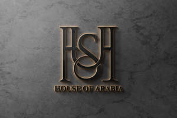

Trade Mark Journal No.2025/014 4 April 2025
UK00004178538 24 March 2025 (3,25)

- Class 3
- Fragrances; Perfumery and fragrances; Perfumes; Oils for perfumes and scents; Potpourris [fragrances]; Scents; Aromatics for fragrances; Colognes; Aromatics for perfumes; Perfume; Household fragrances; Fragrance sachets; Body fragrances; Perfume oils; Extracts of perfumes; Room fragrances; Musk [perfumery]; Natural oils for perfumes; Fragrance emitting wicks for room fragrance; Extracts of flowers [perfumes]; Extracts of flowers being perfumes; Fragrance preparations; Perfumery products; Perfumes for ceramics; Liquid perfumes; Aftershaves; Deodorants for personal use [perfumery]; Fragrance refills for non-electric room fragrance dispensers; Perfumeries; Essences for fragrancing; Cologne; Amber [perfume]; Perfumery; Cedarwood perfumery; Body deodorants [perfumery]; Perfumes for cardboard; Aftershave lotions; Scented soaps; Scented oils; Perfume oils for the manufacture of cosmetic preparations; Solid perfumes; Fragrances for personal use; Scented water for fragrancing; Perfumed potpourris; Vanilla perfumery; Air fragrance preparations; Perfumed soaps; Ethereal oils for fragrancing; Aftershave balms; Room perfume sprays; Synthetic perfumery; Fragrance sachets for eye pillows; After-shave lotions; Perfume water; Synthetic vanillin [perfumery]; Aromatherapy lotions; Skin fresheners [cosmetics]; Scented body lotions; Scented sachets; Air fragrance reed diffusers; Scented body lotions and creams; Fragrance for household purposes; Aromatic potpourris; Moisturisers [cosmetics]; Perfumed creams; After-shave balms; Perfumed sachets; Skincare cosmetics; Aftershave creams; Room fragrancing products; Mint for perfumery; Scented linen sprays; Scented oils used to produce aromas when heated; Feminine deodorant sprays; Aftershave; Perfumed powders [for cosmetic use]; Natural perfumery; Perfuming sachets; Pomanders [aromatic substances]; Roll-on deodorants [toiletries]; Suntan oils [cosmetics]; Eau de colognes; Scented body creams; Suncare lotions; Eau de cologne [cologne water]; Beauty lotions; Perfumed powders; Peppermint oil [perfumery]; Suncare lotions [for cosmetic use]; Room perfumes in spray form; Fragrant sachets; Aromatherapy creams; Perfumes for industrial purposes; Perfumed lotions [toilet preparations]; Anti-perspirant deodorants; After-shave creams; Skin moisturizers used as cosmetics; Cosmetics; Aromatic oils for the bath; Essential oils as perfume for laundry purposes.
- Class 25
- Clothing; Woolen clothing; Knitwear [clothing]; Veils [clothing]; Ready-to-wear clothing; Foulards [clothing articles]; Religious garments; Kerchiefs [clothing]; Denims [clothing]; Garments for protecting clothing; Corsets [clothing, foundation garments]; Silk clothing; Gabardines [clothing]; Jackets [clothing]; Headbands [clothing]; Headbands for clothing; Embroidered clothing; Windproof clothing; Maternity clothing; Men's clothing; Clothing for children; Cashmere clothing; Linen clothing; Parts of clothing, footwear and headgear; Ties [clothing]; Articles of clothing; Leather clothing; Clothing of leather; Leather (Clothing of -); Knitted clothing; Jackets (Stuff -) [clothing]; Thermal clothing; Aprons [clothing]; Clothing for babies; Childrens' clothing; Woven clothing; Clothing for sports; Clothes; Leisure clothing; Chaps (clothing); Clothing for leisure wear; Ready-made clothing; Jackets being sports clothing; Capes (clothing); Waterproof clothing; Clothing layettes; Layettes [clothing]; Infant clothing; Clothing for infants; Athletic clothing; Casual clothing; Thobes; Headscarfs; Shawls and headscarves; Hijabs; Headscarves; Kaftans; Burkas; Niqabs; Headdresses [veils]; Scarfs; Shawls; Saris; Shawls and stoles.
House of Arabia LTD